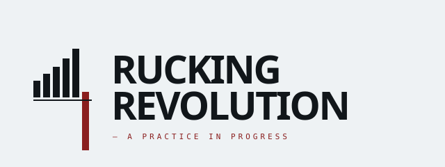
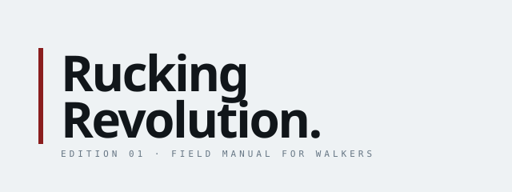
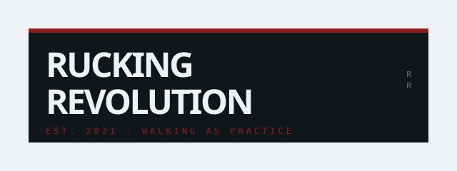
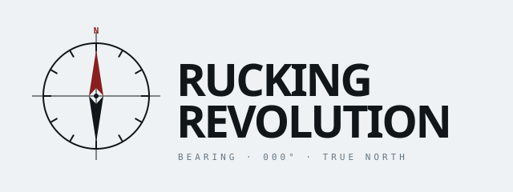
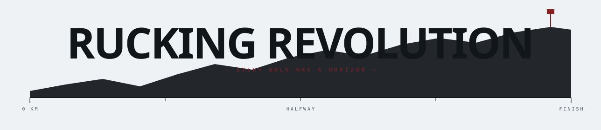

— Logo exploration · system-matched
Locked to the established palette (mineral paper, charcoal, red, steel) and the geometric field-manual language of the illustrations and covers. No beige, no orange.

01BarsRising step-bar — matches Load Bar cover

02RuleHard red rule — matches Specimen cover

03BlockSolid charcoal plate, reversed wordmark

04AzimuthCompass rose — navigation as brand core

05HorizonElevation profile under the wordmark — every walk has a horizon